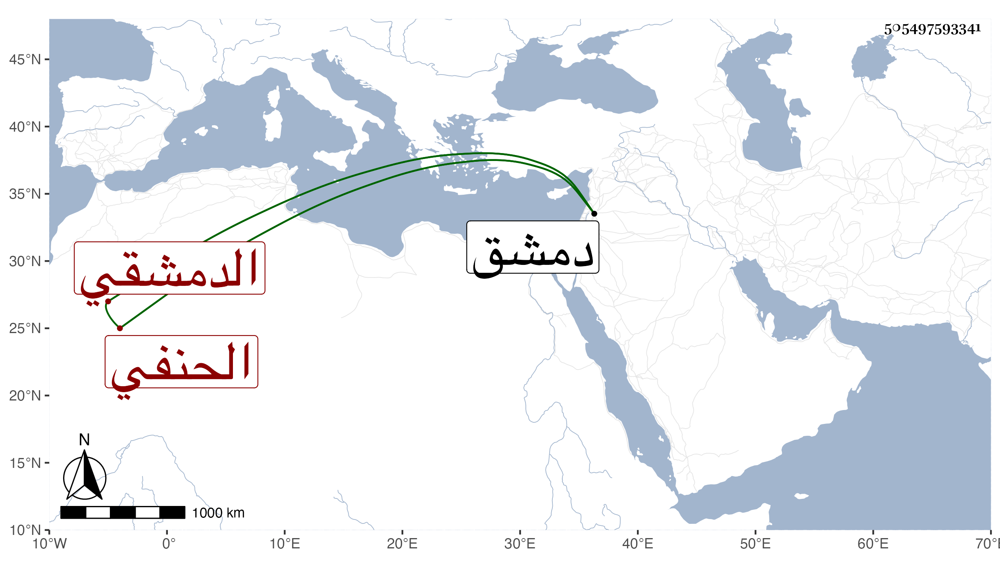

0902Sakhawi.DawLamic.ITO20230111-ara1.EIS1600.505497593341
Biography ID: 505497593341
116
محمد بن محمد العز بن الشمس الدمشقي الحنفي ويعرف بابن الحمراء وهي شهرة لأبيه كان شيخ الحنفية بدمشق بحيث كان التقي بن قاضي شهبة يرجحه على سائر حنفيتها ويعتمد فتواه كما حكاه لي غير واحد من ثقات بلده عن الزين خطاب عنه ومن شيوخه يوسف الرومي رفيقا للسيد ناصر الدين محمد نقيب الأشراف وكان شيخهما يرجح السيد في متانة التحقيق والإدراك وهذا في كثرة المحفوظ بل رأيت من يؤخره في الفقه مع مزيد سذاجة ومزيد تخيل وسلامة فطرة تؤدي لإنكار أشياء ربما يكون له في كثير منها أتم مخلص مع امتهانه لنفسه وإعراضه عن طرق الرياسة مع تحققه بها وربما يتكلم بما يكون وسيلة لتأخره عن من هو في عداد طلبته وقد باشر تدريس الدماغية أصالة والريحانية نيابة عن رفيقه السيد في حياته والشبلية نيابة أيضا عن البدر ضفدع الأذرعي ثم استقل بها وكذا ناب في القضاء ، ولم يخرج من دمشق لغير الحج ، وكان قبله كثير التشكي من النزلة فعند الزيارة النبوية توجه بالمصطفى في صرفها ثم أحرم متجردا فلم يشتكها بعد ، وكذا كان يكثر التزوج فاتفق تزوجه بامرأة حملت منه وظهر ذلك بعد فراقه لها فكرب لذلك وشكاه لبعض العلاء قال فاتفق أنه صبحتئذ صليت معه الصبح فأطال في القنوت فملا فرغ قال يتوهم من يأتم بي دعائي لهم مع إني إنما دعوت لنفي بصرف هذا الحمل رجاء تأمينهم فلم يمض ذاك اليوم حتى ألقت الحمل وذكر ذلك كله من يحبه في صلاحه ورأيت من يشبهه بالجلال البكري الشافعي استحضارا وعقلا وصلاحا ، وأقبل بأخرة على مطالعة الأحياء ونحوه ولكن كتب إلى بعض أهل بلده أنه كان سئ المعاملة فالله أعلم . مات في ربيع الثاني سنة أربع وتسعين عن تسع وسبعين رحمه الله وإيانا . واسم جده أيضا محمد .
